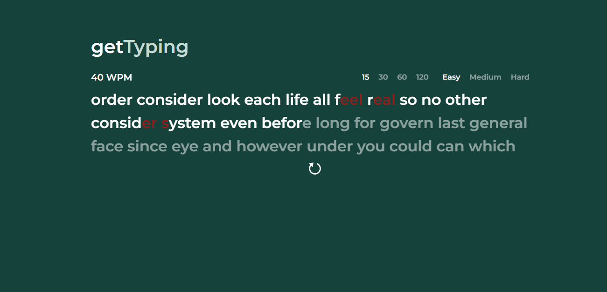

hello world!
hey, i'm fathan. i'm a computer science graduate and currently mastering cs @ uni of leeds.
01 about me
02 my projects
University Module Portal
React
JavaScript
HTML
SQLite
An improved module portal system for the University of Leeds with recommender systems and accessibility and customisation features.